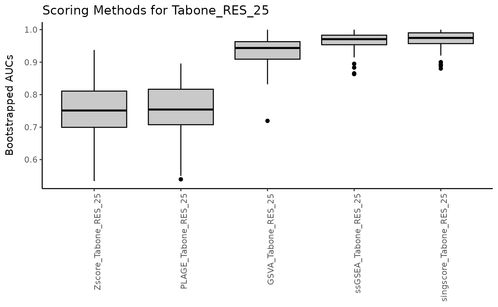

Introduction to the TBSignatureProfiler
Aubrey Odom
Program in Bioinformatics, Boston University, Boston, MAaodom@bu.edu
W. Evan Johnson
The Section of Computational Biomedicine, Boston University School of Medicine, Boston, MAwej@bu.edu
January 2, 2024
Source:vignettes/tbspVignette.Rmd
tbspVignette.RmdIntroduction to the TBSignatureProfiler
Tuberculosis (TB) is the leading cause of infectious disease mortality worldwide, causing on average nearly 1.4 million deaths per year. A consistent issue faced in controlling TB outbreak is difficulty in diagnosing individuals with particular types of TB infections for which bacteria tests (e.g., via GeneXpert, sputum) prove inaccurate. As an alternative mechanism of diagnosis for these infections, researchers have discovered and published multiple gene expression signatures as blood-based disease biomarkers. In this context, gene signatures are defined as a combined group of genes with a uniquely characteristic pattern of gene expression that occurs as a result of a medical condition. To date, more than 30 signatures have been published by researchers, though most have relatively low cross-condition validation (e.g., testing TB in samples from diverse geographic and comorbidity backgrounds). Furthermore, these signatures have never been formally collected and made available as a single unified resource.
We aim to provide the scientific community with a resource to access these aggregated signatures and to create an efficient means for their visual and quantitative comparison via open source software. This necessitated the development of the TBSignatureProfiler, a novel R package which delivers a computational profiling platform for researchers to characterize the diagnostic ability of existing signatures in multiple comorbidity settings. This software allows for signature strength estimation via several enrichment methods and subsequent visualization of single- and multi-pathway results. Its signature evaluation functionalities include signature profiling, AUC bootstrapping, and leave-one-out cross-validation (LOOCV) of logistic regression to approximate TB samples’ status. Its plotting functionalities include sample-signature score heatmaps, bootstrap AUC and LOOCV boxplots, and tables for presenting results.
More recently, the TBSignatureProfiler has undertaken a new role in
analyzing signatures across multiple chronic airway diseases, the most
recent being COVID-19 (see the COVIDsignatures object). As
we grow and expand the TBSignatureProfiler, we hope to add signatures
from multiple diseases to improve the package’s utility in the area of
gene signature comparison.
Installation
In order to install the TBSignatureProfiler from Bioconductor, run the following code:
if (!requireNamespace("BiocManager", quietly = TRUE))
install.packages("BiocManager")
BiocManager::install("TBSignatureProfiler")Compatibility with SummarizedExperiment objects
While the TBSignatureProfiler often allows for the form of a
data.frame or matrix as input data, the most
ideal form of input for this package is that of the
SummarizedExperiment object. This is an amazing data
structure that is being developed by the as part of the SummarizedExperiment
package, and is imported as part of the TBSignatureProfiler package. It
is able to store data matrices along with annotation information,
metadata, and reduced dimensionality data (PCA, t-SNE, etc.). To learn
more about proper usage and context of the
SummarizedExperiment object, you may want to take a look at
the package
vignette. A basic understanding of the assay and
colData properties of a SummarizedExperiment
will be useful for the purposes of this vignette.
A Quick Tutorial for the TBSignatureProfiler
Run Shiny App
This command is to start the TBSignatureProfiler shiny app. Shiny app tutorials are forthcoming and will be uploaded to the package website.
TBSPapp()The basic functions of the shiny app are also included in the command line version of the TBSignatureProfiler, which is the focus of the remainder of this vignette.
Load dataset from a SummarizedExperiment object
In this tutorial, we will work with HIV and Tuberculosis (TB) gene
expression data in a SummarizedExperiment format. This
dataset is included in the TBSignatureProfiler package and can be loaded
into the global environment with data("TB_hiv"). The 31
samples in the dataset are marked as either having both TB and HIV
infection, or HIV infection only.
We begin by examining the dataset, which contains a matrix of counts information (an “assay” in SummarizedExperiment terms) and another matrix of meta data information on our samples (the “colData”). We will also generate a few additional assays; these are the log(counts), the counts per million (CPM) reads mapped, and the log(CPM) assays.
## HIV/TB gene expression data, included in the package
hivtb_data <- TB_hiv
### Note that we have 25,369 genes, 33 samples, and 1 assay of counts
dim(hivtb_data)## [1] 25369 31
# We start with only one assay
assays(hivtb_data)## List of length 1
## names(1): countsWe now make a log counts, CPM and log CPM assay.
## Make a log counts, CPM and log CPM assay
hivtb_data <- mkAssay(hivtb_data, log = TRUE, counts_to_CPM = TRUE)
### Check to see that we now have 4 assays
assays(hivtb_data)## List of length 4
## names(4): counts log_counts counts_cpm log_counts_cpmProfile the data
The TBSignatureProfiler enables comparison of multiple Tuberculosis
gene signatures. The package currently contains information on 34
signatures for comparison. The default signature list object for most
functions here is TBsignatures, although a list with
publication-given signature names is also available as
TBcommon. Data frames of annotation information for these
signatures, including information on associated disease and tissue type,
can be accessed as sigAnnotData and
common_sigAnnotData respectively.
With the runTBSigProfiler function, we are able to score
these signatures with a selection of algorithms, including gene
set variation analysis (GSVA) (Hänzelmann et al, 2013), single-sample
GSEA (ssGSEA) (Barbie et al, 2009), and the ASSIGN
pathway profiling toolkit (Shen et al, 2015). For a complete list of
included scoring methods, run ?runTBsigProfiler in the
terminal.
Here, we evaluate all signatures included in the package with ssGSEA. Paraphrasing from the ssGSEA documentation, for each pairing of one of the 31 samples and its gene set, ssGSEA calculates a separate enrichment score independent of the phenotypic labeling (in this case, whether a sample has HIV/TB, or HIV only). The single sample’s gene expression profile is then transformed to a gene set enrichment profile. A score from the set profile represents the activity level of the biological process in which the gene set’s members are coordinately up- or down-regulated.
## [1] "Anderson_42" "Anderson_OD_51" "Berry_393"
## [4] "Berry_OD_86" "Blankley_380" "Blankley_5"
## [7] "Bloom_OD_144" "Bloom_RES_268" "Bloom_RES_558"
## [10] "Chen_5" "Chen_HIV_4" "Chendi_HIV_2"
## [13] "Darboe_RISK_11" "Dawany_HIV_251" "Duffy_23"
## [16] "Esmail_203" "Esmail_82" "Esmail_OD_893"
## [19] "Estevez_133" "Estevez_259" "Francisco_OD_2"
## [22] "Gjoen_10" "Gjoen_7" "Gliddon_2_OD_4"
## [25] "Gliddon_HIV_3" "Gliddon_OD_3" "Gliddon_OD_4"
## [28] "Gong_OD_4" "Heycken_FAIL_22" "Hoang_OD_13"
## [31] "Hoang_OD_20" "Hoang_OD_3" "Huang_OD_13"
## [34] "Jacobsen_3" "Jenum_8" "Kaforou_27"
## [37] "Kaforou_OD_44" "Kaforou_OD_53" "Kaul_3"
## [40] "Kulkarni_HIV_2" "Kwan_186" "LauxdaCosta_OD_3"
## [43] "Lee_4" "Leong_24" "Leong_RISK_29"
## [46] "Long_RES_10" "Maertzdorf_15" "Maertzdorf_4"
## [49] "Maertzdorf_OD_100" "Natarajan_7" "PennNich_RISK_6"
## [52] "Qian_OD_17" "Rajan_HIV_5" "Roe_3"
## [55] "Roe_OD_4" "Sambarey_HIV_10" "Singhania_OD_20"
## [58] "Sivakumaran_11" "Sloot_HIV_2" "Suliman_4"
## [61] "Suliman_RISK_2" "Suliman_RISK_4" "Sweeney_OD_3"
## [64] "Tabone_OD_11" "Tabone_RES_25" "Tabone_RES_27"
## [67] "Thompson_9" "Thompson_FAIL_13" "Thompson_RES_5"
## [70] "Tornheim_71" "Tornheim_RES_25" "Vargas_18"
## [73] "Vargas_42" "Verhagen_10" "Walter_51"
## [76] "Walter_PNA_119" "Walter_PNA_47" "Zak_RISK_16"
## [79] "Zhao_NANO_6"
## We can use all of these signatures for further analysis
siglist_hivtb <- names(TBsignatures)
## Run the TBSignatureProfiler to score the signatures in the data
out <- capture.output(ssgsea_result <- runTBsigProfiler(input = hivtb_data,
useAssay = "log_counts_cpm",
signatures = TBsignatures,
algorithm = "ssGSEA",
combineSigAndAlgorithm = TRUE,
parallel.sz = 1))## Parameter update_genes is TRUE. Gene names will be updated.## The following signatures have <2 genes that coincide with the genes in the given sample and will not be scored: Chendi_HIV_2## Running ssGSEA## Warning: no function found corresponding to methods exports from 'HDF5Array'
## for: 'extract_sparse_array'## Warning: multiple methods tables found for 'sparsity'## Warning in .filterFeatures(expr, method): 2204 genes with constant expression
## values throuhgout the samples.
## Remove any signatures that were not scored
TBsignatures <- subset(TBsignatures, !(names(TBsignatures) %in% c("Chendi_HIV_2")))When a SummarizedExperiment is the format of the input
data for runTBsigprofiler, the returned object is also of
the SummarizedExperiment. The scores will be returned as a
part of the colData.
Below, we subset the data to compare the enrichment scores for the Anderson_42, Anderson_OD_51, and Berry_393 signatures.
Signature Scores
Visualization with TBSignatureProfiler Plots
Heatmap with all Signatures
Commonly, enrichment scores are compared across signatures by means
of a heatmap combined with clustering methods to group samples and/or
scores. The signatureHeatmap function uses the information
from the score data to visualize changes in gene expression across
samples and signatures (or genes, if only one signature is
selected).
Here, the columns of the heatmap represent samples, and rows represent signatures. Rows are split according to annotation data with associated signature disease type. As we move across the columns, we see different patterns of gene expression as indicated by the varying color and intensity of individual rectangles. In the top bar, the solid red represents a sample is HIV infected only, and solid blue indicates that the sample is both HIV and TB infected. In the gradient area of the heatmap, the scaled scores are associated with either up-regulated or down-regulated genes. A cluster of samples near the bottom of the heatmap reveals that some signatures are inversely associated with TB/HIV identification, as their phenotypic mapping for lower/higher scores is nearly the opposite of most of the other signatures.
# Colors for gradient
colors <- RColorBrewer::brewer.pal(6, "Spectral")
col.me <- circlize::colorRamp2(seq(from = -2, to = 2,
length.out = 6), colors)
signatureHeatmap(ssgsea_result, name = "Heatmap of Signatures,
ssGSEA Algorithm",
signatureColNames = names(TBsignatures),
annotationColNames = "Disease",
scale = TRUE,
showColumnNames = TRUE,
choose_color = col.me)
Boxplots of Scores, All Signatures
Another method of visualization for scores is that of boxplots. When
multiple signatures in the input data are to be compared, the
signatureBoxplot function takes the scores for each
signature and produces an individual boxplot, with jittered points
representing individual sample scores. For this specific example, it is
clear that some signatures do a better job at differentiating the TB/HIV
and HIV only samples than others, as seen by overlapping or separate
spreads of the adjacent boxplots.
signatureBoxplot(inputData = ssgsea_result,
name = "Boxplots of Signatures, ssGSEA",
signatureColNames = names(TBsignatures),
annotationColName = "Disease", rotateLabels = FALSE)## Warning: Use of `boxplotdfm$Group` is discouraged.
## ℹ Use `Group` instead.
## Use of `boxplotdfm$Group` is discouraged.
## ℹ Use `Group` instead.## Warning: Use of `boxplotdfm$Score` is discouraged.
## ℹ Use `Score` instead.## Warning: Use of `boxplotdfm$Group` is discouraged.
## ℹ Use `Group` instead.## Warning: Use of `boxplotdfm$Score` is discouraged.
## ℹ Use `Score` instead.
Compare scoring methods for a single signature
The compareAlgs function allows multiple scoring methods
to be compared via a heatmap or boxplot with samples on the columns and
methods on the rows. Here, we compare scoring methods for the
“Anderson_42” signature. It seems that singscore may be the best method
here, as its sample scores most closely align with the information
provided by the annotation data.
An examination of the boxplot and heatmap together determine that PLAGE and the comparing Z-score methods are least helpful in correctly identifying TB from LTBI subjects - AUC scores are little more than 0.5 and subjects in different groups are falsely assigned similar scores. According to the boxplot, we see that ssGSEA has the highest predictive AUC.
# Heatmap
compareAlgs(hivtb_data, annotationColName = "Disease",
scale = TRUE,
algorithm = c("GSVA", "ssGSEA",
"singscore", "PLAGE", "Zscore"),
useAssay = "log_counts",
signatures = TBsignatures[1],
choose_color = col.me, show.pb = FALSE,
parallel.sz = 1)
# Boxplot
compareAlgs(hivtb_data, annotationColName = "Disease",
scale = TRUE,
algorithm = c("GSVA", "ssGSEA",
"singscore", "PLAGE", "Zscore"),
useAssay = "log_counts",
signatures = TBsignatures[1],
choose_color = col.me, show.pb = FALSE,
parallel.sz = 1, output = "boxplot")
Additional Documentation and Tutorials
The functions presented as part of this vignette are but a limited subset of those available in the TBSignatureProfiler package. A more complete tutorial is available by going to our website, and selecting the tab labeled “Command Line Analysis.”
Session Info
## R version 4.3.1 (2023-06-16)
## Platform: x86_64-pc-linux-gnu (64-bit)
## Running under: AlmaLinux 8.9 (Midnight Oncilla)
##
## Matrix products: default
## BLAS: /share/pkg.8/r/4.3.1/install/lib64/R/lib/libRblas.so
## LAPACK: /share/pkg.8/r/4.3.1/install/lib64/R/lib/libRlapack.so; LAPACK version 3.11.0
##
## locale:
## [1] LC_CTYPE=en_US.UTF-8 LC_NUMERIC=C
## [3] LC_TIME=en_US.UTF-8 LC_COLLATE=en_US.UTF-8
## [5] LC_MONETARY=en_US.UTF-8 LC_MESSAGES=en_US.UTF-8
## [7] LC_PAPER=en_US.UTF-8 LC_NAME=C
## [9] LC_ADDRESS=C LC_TELEPHONE=C
## [11] LC_MEASUREMENT=en_US.UTF-8 LC_IDENTIFICATION=C
##
## time zone: America/New_York
## tzcode source: system (glibc)
##
## attached base packages:
## [1] stats4 stats graphics grDevices utils datasets methods
## [8] base
##
## other attached packages:
## [1] SummarizedExperiment_1.32.0 Biobase_2.62.0
## [3] GenomicRanges_1.54.1 GenomeInfoDb_1.38.1
## [5] IRanges_2.36.0 S4Vectors_0.40.1
## [7] BiocGenerics_0.48.1 MatrixGenerics_1.14.0
## [9] matrixStats_1.1.0 TBSignatureProfiler_1.13.4
## [11] BiocStyle_2.28.0
##
## loaded via a namespace (and not attached):
## [1] RColorBrewer_1.1-3 rstudioapi_0.15.0
## [3] jsonlite_1.8.7 shape_1.4.6
## [5] magrittr_2.0.3 magick_2.7.4
## [7] farver_2.1.1 rmarkdown_2.25
## [9] GlobalOptions_0.1.2 fs_1.6.3
## [11] zlibbioc_1.48.0 ragg_1.2.5
## [13] vctrs_0.6.4 memoise_2.0.1
## [15] Cairo_1.6-0 DelayedMatrixStats_1.22.1
## [17] RCurl_1.98-1.13 htmltools_0.5.7
## [19] S4Arrays_1.2.0 Rhdf5lib_1.22.0
## [21] pROC_1.18.2 SparseArray_1.2.2
## [23] rhdf5_2.44.0 sass_0.4.7
## [25] bslib_0.5.1 htmlwidgets_1.6.2
## [27] desc_1.4.2 plyr_1.8.9
## [29] HGNChelper_0.8.1 cachem_1.0.8
## [31] lifecycle_1.0.4 iterators_1.0.14
## [33] pkgconfig_2.0.3 rsvd_1.0.5
## [35] Matrix_1.6-0 R6_2.5.1
## [37] fastmap_1.1.1 GenomeInfoDbData_1.2.11
## [39] clue_0.3-64 digest_0.6.33
## [41] colorspace_2.1-1 singscore_1.20.0
## [43] AnnotationDbi_1.62.1 rprojroot_2.0.3
## [45] irlba_2.3.5.1 textshaping_0.3.6
## [47] crosstalk_1.2.0 RSQLite_2.3.3
## [49] beachmat_2.16.0 labeling_0.4.3
## [51] gdata_2.19.0 fansi_1.0.5
## [53] httr_1.4.7 abind_1.4-7
## [55] compiler_4.3.1 withr_2.5.2
## [57] bit64_4.0.5 doParallel_1.0.17
## [59] ROCit_2.1.1 BiocParallel_1.36.0
## [61] DBI_1.1.3 highr_0.10
## [63] HDF5Array_1.28.1 DelayedArray_0.28.0
## [65] rjson_0.2.21 gtools_3.9.4
## [67] tools_4.3.1 glue_1.6.2
## [69] rhdf5filters_1.12.1 grid_4.3.1
## [71] cluster_2.1.4 reshape2_1.4.4
## [73] generics_0.1.3 gtable_0.3.4
## [75] tidyr_1.3.0 BiocSingular_1.16.0
## [77] ScaledMatrix_1.8.1 utf8_1.2.4
## [79] XVector_0.42.0 foreach_1.5.2
## [81] pillar_1.9.0 stringr_1.5.1
## [83] GSVA_1.48.1 limma_3.56.2
## [85] circlize_0.4.15 dplyr_1.1.3
## [87] lattice_0.21-8 bit_4.0.5
## [89] annotate_1.78.0 tidyselect_1.2.0
## [91] ComplexHeatmap_2.16.0 SingleCellExperiment_1.22.0
## [93] locfit_1.5-9.8 Biostrings_2.70.1
## [95] knitr_1.45 bookdown_0.34
## [97] edgeR_3.42.4 xfun_0.41
## [99] DT_0.28 stringi_1.8.1
## [101] yaml_2.3.7 evaluate_0.23
## [103] codetools_0.2-19 tibble_3.2.1
## [105] BiocManager_1.30.21 graph_1.78.0
## [107] cli_3.6.1 xtable_1.8-6
## [109] systemfonts_1.0.4 munsell_0.5.0
## [111] jquerylib_0.1.4 Rcpp_1.0.11
## [113] png_0.1-8 XML_3.99-0.15
## [115] parallel_4.3.1 ellipsis_0.3.2
## [117] pkgdown_2.0.7 ggplot2_3.4.4
## [119] blob_1.2.4 sparseMatrixStats_1.12.1
## [121] bitops_1.0-7 GSEABase_1.62.0
## [123] scales_1.2.1 purrr_1.0.2
## [125] crayon_1.5.2 GetoptLong_1.0.5
## [127] rlang_1.1.2 KEGGREST_1.40.0